Introduction to Neural Networks
~ by @raphaelmcobe ~
Neural Networks
- Neurons as structural constituents of the brain [Ramón y Cajál, 1911];
- Five to six orders of magnitude slower than silicon logic gates;
- In a silicon chip happen in the nanosecond (on chip) vs millisecond range (neural events);
- A truly staggering number of neurons (nerve cells) with massive interconnections between them;
Neural Networks
- Receive input from other units and decides whether or not to fire;
- Approximately 10 billion neurons in the human cortex, and 60 trillion synapses or connections [Shepherd and Koch, 1990];
- Energy efficiency of the brain is approximately $10^{−16}$ joules per operation per second against ~ $10^{−8}$ in a computer;
Neurons
Neurons
- input signals from its dendrites;
- output signals along its (single) axon;
Neurons
How do they work?
- Control the influence from one neuron on another:
- Excitatory when weight is positive; or
- Inhibitory when weight is negative;
- Nucleus is responsible for summing the incoming signals;
- If the sum is above some threshold, then fire!
Neurons
Artificial Neuron

Neural Networks
Neural Networks
- It appears that one reason why the human brain is so powerful is the sheer complexity of connections between neurons;
- The brain exhibits huge degree of parallelism;
Artificial Neural Networks
- Model each part of the neuron and interactions;
- Interact multiplicatively (e.g. $w_0x_0$) with the dendrites of the other neuron based on the synaptic strength at that synapse (e.g. $w_0$ );
- Learn synapses strengths;
Artificial Neural Networks
Function Approximation Machines
- Datasets as composite functions: $y=f^{*}(x)$
- Maps $x$ input to a category (or a value) $y$;
- Learn synapses weights and aproximate $y$ with $\hat{y}$:
- $\hat{y} = f(x;w)$
- Learn the $w$ parameters;
Artificial Neural Networks
- Can be seen as a directed graph with units (or neurons) situated at the vertices;
- Some are input units
- Receive signal from the outside world;
- The remaining are named computation units;
- Each unit produces an output
- Transmitted to other units along the arcs of the directed graph;
Artificial Neural Networks
- Input, Output, and Hidden layers;
- Hidden as in “not defined by the output”;

Artificial Neural Networks
Motivation Example (taken from Jay Alammar blog post)
- Imagine that you want to forecast the price of houses at your neighborhood;
- After some research you found that 3 people sold houses for the following values:
| Area (sq ft) (x) | Price (y) in USD |
|---|---|
| 2,104 | $399,900$ |
| 1,600 | $329,900$ |
| 2,400 | $369,000$ |
Artificial Neural Networks
Motivation Example (taken from Jay Alammar blog post)
If you want to sell a 2K sq ft house, how much should ask for it?
How about finding the average price per square feet?
$180 per sq ft.
Artificial Neural Networks
Motivation Example (taken from Jay Alammar blog post)
- Our very first neural network looks like this:
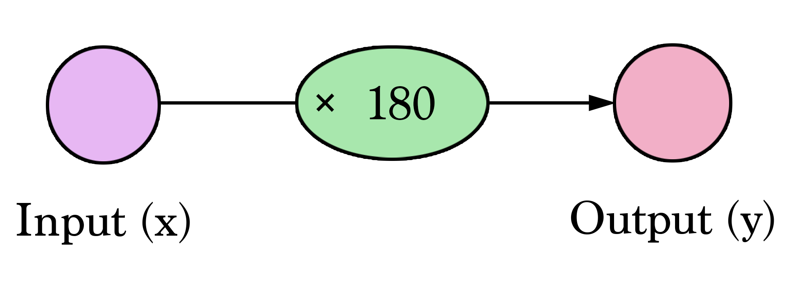
Artificial Neural Networks
Motivation Example (taken from Jay Alammar blog post)
- Multiplying $2,000$ sq ft by $180$ gives us $360,000$.
- Calculating the prediction is simple multiplication.
- We needed to think about the weight we’ll be multiplying by.
- That is what training means!
| Area (sq ft) (x) | Price (y) | Estimated Price($\hat{y}$) |
|---|---|---|
| 2,104 | $399,900$ | $378,720$ |
| 1,600 | $329,900$ | $288,000$ |
| 2,400 | $369,000$ | $432,000$ |
Artificial Neural Networks
Motivation Example (taken from Jay Alammar blog post)
- How bad is our model?
- Calculate the Error;
- A better model is one that has less error;
Mean Square Error : $2,058$
| Area (sq ft) (x) | Price (y) | Estimated Price($\hat{y}$) | $y-\hat{y}$ | $(y-\hat{y})^2$ |
|---|---|---|---|---|
| 2,104 | $399,900$ | $378,720$ | $21$ | $449$ |
| 1,600 | $329,900$ | $288,000$ | $42$ | $1756$ |
| 2,400 | $369,000$ | $432,000$ | $-63$ | $3969$ |
Artificial Neural Networks
- Fitting the line to our data:
Follows the equation: $\hat{y} = W * x$
Artificial Neural Networks
How about addind the Intercept?
$\hat{y}=Wx + b$Artificial Neural Networks
The Bias

Artificial Neural Networks
Try to train it manually:
Residuals

- One way to calculate $w_0$ and $w_1$ is based on the sum of squared residuals (RSS - Residual Sum of Squares):
$J(W) = \frac{1}{2n}\sum_{i=1}^{n} \epsilon_i^2$
Variation of the Cost Function
Examining $\epsilon$ as a function of $w_0$ and $w_1$
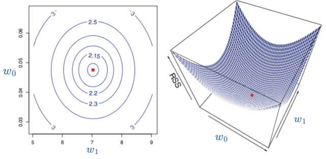
Finding values of $w_0$ and $w_1$
Gradient Calculation
- The gradient of a vector is a generalization of the derivative and is represented by the vector operator $\nabla$. This operation is used to minimize our cost function (RSS):
- Method of Ordinary Least Squares (OLS)
Finding values of $w_0 and $w_1$
The problem with the analytical solution
- The analytical solution in its vector form is:
$W = (X^T X)^{-1} X^T Y$
- Disadvantages of using the analytical solution:
- $X^T X$ is not always invertible;
- The complexity of computing the inverse is of the order $O(n^3)$:
- If the number of features is high, it can become computationally expensive;
- Extremely high memory consumption.
Finding values of $w_0$ and $w_1$
Inverse Calculation
ProblemImagine a dataset containing $10^5$ features and $10^6$ observations; in this case, $X^T X$ would have $10^5 \times 10^5$ floating points which, at 8 bytes per number, would require 80 gigabytes. The inverse calculation would then consume on the order of $O(n^3)$.
80 kilo-yottabytes!!!Usually, in classification problems, we have the impression that the more features we have, the better our technique's accuracy will be. However, in real-world problems where we have a limited number of samples, a phenomenon known as the curse of dimensionality is observed. There are several negative effects caused by the indiscriminate increase in features:
- Hughes Phenomenon: For a finite number of samples, there exists a dimensionality $d^\ast$ beyond which the classification accuracy decreases.
Artificial Neural Networks
How to discover the correct weights?
- Gradient Descent:
- Finding the minimum of a function;
- Look for the best weights values, minimizing the error;
- Takes steps proportional to the negative of the gradient of the function at the current point.
- Gradient is a vector that is tangent of a function and points in the direction of greatest increase of this function.
- Finding the minimum of a function;
Artificial Neural Networks
Gradient Descent
- In mathematics, gradient is defined as partial derivative for every input variable of function;
- Negative gradient is a vector pointing at the greatest decrease of a function;
- Minimize a function by iteratively moving a little bit in the direction of negative gradient;
Artificial Neural Networks
Gradient Descent
- With a single weight:

Finding values of $w_0$ and $w_1$
Gradient Descent Technique
- Iterative calculation of the matrix $W$ with:
$w_0^{(t+1)} = w_0^{(t)} - \alpha \frac{\partial RSS}{\partial w_0}$
$w_1^{(t+1)} = w_1^{(t)} - \alpha \frac{\partial RSS}{\partial w_1}$
- Where $\alpha$ is the Learning Rate, i.e., the step size towards the minimum cost value.
Artificial Neural Networks
Gradient Descent
Artificial Neural Networks
Perceptron
- In 1958, Frank Rosenblatt proposed an algorithm for training the perceptron.
- Simplest form of Neural Network;
- One unique neuron;
- Adjustable Synaptic weights
Artificial Neural Networks
Perceptron
- Classification of observations into two classes:
Images Taken from Towards Data Science
Artificial Neural Networks
Perceptron
- Classification of observations into two classes:

Images Taken from Towards Data Science
Artificial Neural Networks
Perceptron
- E.g, the OR function:
Find the $w_i$ values that could solve the or problem.
Artificial Neural Networks
Perceptron
- E.g, the OR function:
Artificial Neural Networks
Perceptron
- One possible solution $w_0=-1$, $w_1=1.1$, $w_2=1.1$:
Artificial Neural Networks
The Keras framework
- High-level neural networks API;
- Capable of running on top of TensorFlow, CNTK, or Theano;
- Focus on enabling fast experimentation;
- Go from idea to result with the least possible delay;
- Runs seamlessly on CPU and GPU;
- Compatible with: Python 2.7-3.12 and R;
Artificial Neural Networks
The Keras framework
- Use the implementation of the tensorflow:
- Create a sequential model (perceptron)
# Import the Sequential model
from tensorflow.keras.models import Sequential
# Instantiate the model
model = Sequential()
Artificial Neural Networks
The Keras framework
- Create a single layer with a single neuron:
unitsrepresent the number of neurons;
# Import the Dense layer
from tensorflow.keras.layers import Dense
# Add a forward layer to the model
model.add(Dense(units=1, input_dim=2))
Artificial Neural Networks
The Keras framework
- Compile and train the model
- The compilation creates a computational graph of the training;
# Specify the loss function (error) and the optimizer
# (a variation of the gradient descent method)
model.compile(loss="mean_squared_error", optimizer="sgd")
# Fit the model using the train data and also
# provide the expected result
model.fit(x=train_data_X, y=train_data_Y)
Artificial Neural Networks
The Keras framework
- Evaluate the quality of the model:
# Use evaluate function to get the loss and other metrics that the framework
# makes available
loss_and_metrics = model.evaluate(train_data_X, train_data_Y)
print(loss_and_metrics)
#0.4043288230895996
# Do a prediction using the trained model
prediction = model.predict(train_data_X)
print(prediction)
# [[-0.25007164]
# [ 0.24998784]
# [ 0.24999022]
# [ 0.7500497 ]]
Artificial Neural Networks
Activation Functions
- Describes whether or not the neuron fires, i.e., if it forwards its value for the next neuron layer;
- Historically they translated the output of the neuron into either 1 (On/active) or 0 (Off) - Step Function:
if(prediction[i]>0.5){
return 1
}
return 0
Artificial Neural Networks
The Keras framework
Exercise:
Run the example of the Jupyter notebook:
Perceptron - OR
Artificial Neural Networks
Perceptron
Exercise:
- What about the AND function?
| $x_1$ | $x_2$ | $y$ |
|---|---|---|
| 0 | 0 | 0 |
| 0 | 1 | 0 |
| 1 | 0 | 0 |
| 1 | 1 | 1 |
Artificial Neural Networks
Perceptron - What it can’t do!
- The XOR function:
Check-out what happens when we try to use the same architecture for solving the XOR function here.
Artificial Neural Networks
Understanding the training
- Plotting the training progress of the XOR ANN:
history = model.fit(x=X_data, y=Y_data, epochs=2500, verbose=0)
import matplotlib.pyplot as plt
plt.plot(history.history['loss'])
plt.title('Model Training Progression')
plt.ylabel('Loss')
plt.xlabel('Epoch')
plt.legend(['Loss'], loc='upper left')
plt.show()
Artificial Neural Networks
Activation Functions
- Multiply the input by its weights, add the bias and applies activation;
- Sigmoid, Hyperbolic Tangent, Rectified Linear Unit;
- Differentiable function instead of the step function;
Some examples of activation functions:
Logistic function (sigmoid):
$g(a) = \frac{1}{1+e^{-a}}, \text{ such that } g(a)\in[0,1]$
Hyperbolic tangent function:
$g(a) = 2\sigma(2a)-1, \text{ such that } g(a)\in[-1,1]$ where $\sigma(x)$ corresponds to the logistic function.
Activation Functions
It is desirable that an activation function is differentiable.
How to choose it? It depends on your application.
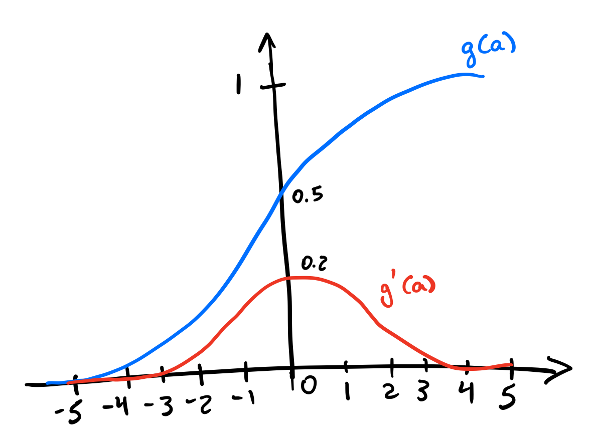- Assume $g(a) = \frac{1}{1+e^{-a}}$.
- We have that $g^\prime(a) = g(a)(1-g(a))$.
- Notice that $g^\prime(a)$ saturates when $a > 5$ or $a < -5$.
- Furthermore, $g^\prime(a) < 1$ for all $a$. This means that for networks with many layers, the gradient tends to vanish during training.
Activation Functions
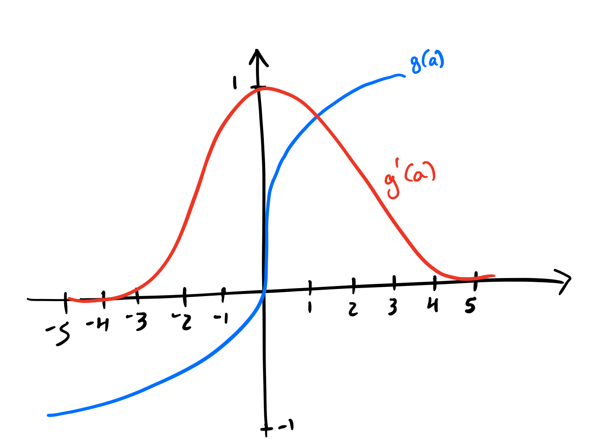- Assume $g(a) = 2\sigma(2a)-1$.
- We have that $g^\prime(a) = 1-g^2(a)$.
- Although saturation occurs, $g^\prime(a)$ reaches higher values, even reaching a maximum of 1 when $a = 0$.
Artificial Neural Networks
The Bias
Artificial Neural Networks
The Bias
Give even more power to our model
Artificial Neural Networks
Perceptron - Solving the XOR problem
- 3D example of the solution of learning the OR function:
- Using Sigmoid function;
Artificial Neural Networks
Perceptron - Solving the XOR problem
- Maybe there is a combination of functions that could create hyperplanes that separate the XOR classes:
- By increasing the number of layers we increase the complexity of the function represented by the ANN:
Artificial Neural Networks
Perceptron - Solving the XOR problem
- The combination of the layers:
Artificial Neural Networks
Multilayer Perceptrons - Increasing the model power
-
Typically represented by composing many different functions: $$y = f^{(3)}(f^{(2)}(f^{(1)}(x)))$$
-
The depth of the network - the deep in deep learning! (-;
Artificial Neural Networks
Multilayer Perceptrons - Increasing the model power
- Information flows from $x$ , through computations and finally to $y$.
- No feedback!
Artificial Neural Networks
Perceptron - Solving the XOR problem
- Implementing an ANN that can solve the XOR problem:
- Add a new layer with a larger number of neurons:
...
#Create a layer with 4 neurons as output
model.add(Dense(units=4), activation="sigmoid", input_dim=2)
# Connect to the first layer that we defined
model.add(Dense(units=1, activation="sigmoid")
Let’s check if that solves our XOR problem here.
Artificial Neural Networks
Understanding the training
- Plot the architecture of the network:
tf.keras.utils.plot_model(model, show_shapes=True, show_layer_names=False)
Artificial Neural Networks
Problems with the training procedure:
- Saddle points:
- No matter how long you train your model for, the error remains (almost) constant!

Artificial Neural Networks
Optimization alternatives
- The Gradient Descent is not always the best option to go with:
- Only does the update after calculating the derivative for the whole dataset;
- Can take a long time to find the minimum point;
Artificial Neural Networks
Optimization alternatives
- The Gradient Descent is not always the best option to go with:
- For non-convex surfaces, it may only find the local minimums - the saddle situation;
- Vectorization
Artificial Neural Networks
Optimization alternatives
- Gradient Descent alternatives:
- Stochastic Gradient Descent: updates at each input;
- Minibatch Gradient Descent: updates after reading a batch of examples;
Animations taken from Vikashraj Luhaniwal post.
Artificial Neural Networks
Optimization alternatives
Adaptative Learning Rates:
Animations taken from Vikashraj Luhaniwal post.
Artificial Neural Networks
Multilayer Perceptron - XOR
- Try another optimizer:
model.compile(loss="mean_squared_error", optimizer="adam")
My solution
Artificial Neural Networks
Predicting probabilities
- Imagine that we have more than 2 classes to output;
- One of the most popular usages for ANN;
Artificial Neural Networks
Predicting probabilities
- The Softmax function;
- Takes an array and outputs a probability distribution, i.e., the probability of the input example belonging to each of the classes in my problem;
- One of the activation functions available at
Keras:
layer_dense(units = 2, activation = 'softmax')
The Softmax Activation
- The softmax function $\sigma:\mathbb{R}^K\rightarrow [0,1]^K$ is a generalization of the logistic function, where $K$ corresponds to the number of classes
- Why softmax and not the logistic function?
- Usually, the logistic function is applied to each output neuron without considering all the others. In this case, softmax results in a probability of the neuron of each class responding to an input stimulus
Artificial Neural Networks
Loss functions
- For regression problems
- Mean squared error is not always the best one to go;
- What if we have a three classes problem?
- Alternatives:
mean_absolute_error,mean_squared_logarithmic_error
- Mean squared error is not always the best one to go;
Artificial Neural Networks
Loss functions
- Cross Entropy loss:
- Default loss function to use for binary classification problems.
- Measures the performance of a model whose output is a probability value between 0 and 1;
- Loss increases as the predicted probability diverges from the actual label;
- A perfect model would have a log loss of 0;
Artificial Neural Networks
What about the overfitting?
Interpretation of the Test Set
Does Perfect Metric on the Test Set Mean the Model is Perfect?
Not necessarily: In no non-trivial problem will you have access to a completely representative database of the problem. Evaluating with a test set alleviates but doesn’t solve the problem. There will never be enough examples to perfectly model the phenomenon.
Analysis of Model Error
Types of Errors
- Prediction error can be divided into three parts:
- Irreducible Error: cannot be eliminated regardless of the algorithm used.
- Introduced from the chosen problem framework.
- Caused by unknown factors.
- Bias Error: assumptions made by a model to make the target function easier to learn.
- Variance Error: the amount the target function estimate will change if different training data are used.
- Irreducible Error: cannot be eliminated regardless of the algorithm used.
Analysis of Model Error
Bias Error
- Difference between the expected (or average) prediction of our model and the correct value we are trying to predict.
- Imagine repeating the entire model-building process more than once:
- Each time you gather new data and perform a new analysis, you create a new model.
- Due to randomness in the underlying data sets, resulting models will have a variety of predictions.
- Measures how far, on average, predictions of these models are from the correct value.
- Our model has bias if it systematically predicts below or above the target variable.
Analysis of Model Error
Variance Error
- In a sense, captures the model’s generalization capability.
- How much our prediction would change if we trained it with different data.
- Ideally, it shouldn’t change much from one training data set to the next.
- Algorithms with high variance are strongly influenced by the specifics of training data.
- Generally, nonlinear machine learning algorithms that are very flexible have high variance.
- For example, Polynomial Regression with high-degree polynomials!
The Bias-Variance Tradeoff
-
Bias error arises due to incorrect assumptions made by the learning algorithm. Excessive bias can lead the algorithm to overlook important connections between features and target outcomes, resulting in underfitting.
-
Variance represents the error stemming from the algorithm’s susceptibility to minor variations in the training dataset. Elevated variance might occur when the algorithm models the random noise present in the training data, causing overfitting.
Dilemma: Variance vs Bias
- Low bias: suggests fewer assumptions about the shape of the target function.
- Regression Trees, KNN Regression
- High bias: suggests more assumptions about the shape of the target function.
- Linear Regression, Logistic Regression
- Low variance: suggests small changes in the estimate of the target function with changes in the training data set.
- Linear Regression, Logistic Regression
- High variance: suggests large changes in the estimate of the target function with changes in the training data set.
- Regression Trees, KNN Regression
Dilemma: Variance vs Bias
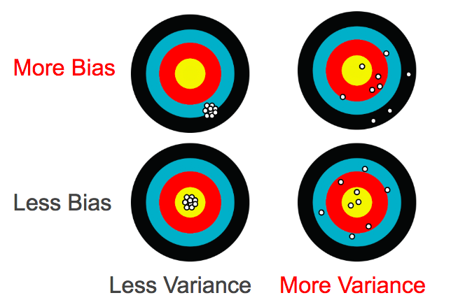- Increasing bias will decrease variance.
- Increasing variance will decrease bias.
Dilemma: Variance vs Bias
Tradeoff
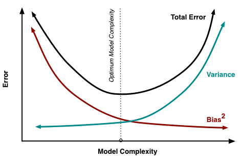Dilemma: Variance vs Bias
- A very simple model with few parameters has high Bias and low Variance.
- A complex model with a large number of parameters will have high Variance and low Bias.
- One should aim for balance, avoiding overfitting while not underfitting the data.
Dilemma: Variance vs Bias
- Models should try to generalize beyond what is observed in the training set.
- Regularization plays a role in controlling the overfitting of classifiers.
Visualizing the Overfitting
How Decision Trees change after removing a few examples
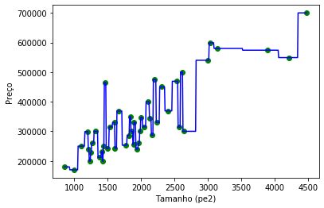 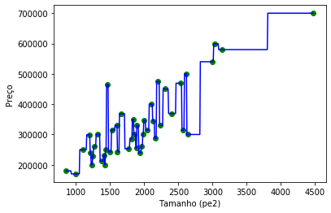Regularization
- Decreases variance by reducing learning effectiveness.
- Penalizes model complexity.
- Nearly all learning algorithms have some form of regularization mechanism.
Artificial Neural Networks
Dealing with overfitting
- Dropout layers:
- Randomly disable some of the neurons during the training passes;
Artificial Neural Networks
Dealing with overfitting
- Dropout layers:
# Drop half of the neurons outputs from the previous layer
model.add(Dropout(0.5))
How does it realy do it?
Artificial Neural Networks
Larger Example
- The MNIST dataset: database of handwritten digits;
- Dataset included in Keras;

Artificial Neural Networks
The MNIST MLP
- Try to improve the classification results using this notebook:
- Things to try:
- Increase the number of neurons at the first layer;
- Change the optimizer and the loss function;
- Try
categorical_crossentropyandrmspropoptimizer; - Try adding some extra layers;
Artificial Neural Networks
The MNIST MLP
-
Try to improve the classification results using this notebook:
-
Things to try:
- Try addind
Dropoutlayers; - Increase the number of
epochs; - Try to normalize the data!
- Try addind
-
What is the best accuracy?
Mini Projects
Particle Physics
Artificial Neural Networks
The Particle Physics Project
Artificial Neural Networks
The Particle Physics Project
Artificial Neural Networks
The Particle Physics Project
- Quantum Chromodynamics
Artificial Neural Networks
Signal VS Background
Artificial Neural Networks
Signal VS Background
Run this Jupyter Notebook for performing the Jet Classification.
COVID19 Chest CT Image Processing
Artificial Neural Networks
COVID19 Diagnosis
Artificial Neural Networks
COVID19 Diagnosis
Run this Jupyter Notebook for performing the CT Image Classification.
Convolutional Neural Networks
Introduction
- Deep learning
- Branch of machine learning that uses neural networks with multiple layers
- Employ layers to progressively learn different levels of features from input data
- Abstraction increase as more layers are used for feature extraction and learning
- Among deep learning techniques, special attention has been given to Convolutional Neural Networks (CNNs).
- These models have a high capacity for data representation, yielding promising results in numerous fields of knowledge.
Convolutional Neural Networks
- The basic idea is to use raw data as input
- Allow the network to learn the most important features for the problem at hand.
- Eliminates the need to manually extract features (handcrafted features).
Convolutional Neural Networks
- Generally composed of two modules:
- Feature learning: performed through convolution, pooling, and activation operations.
- Classification: typically fully connected layers and a softmax output layer.
Convolutional Neural Networks
- What makes CNNs so interesting for various pattern classification tasks?
- feature learning
- Important information (like texture) is learned at different levels
- Less susceptible to rotation, translation, and scale issues.
- To understand how they work, we will first study the feature learning layers
- (i) convolution, (ii) pooling, and (iii) activation operations.
Feature Learning
Convolution
- Convolution are widely used in image processing and computer vision tasks, such as image filtering (blurring and noise) and edge detection
Convolution
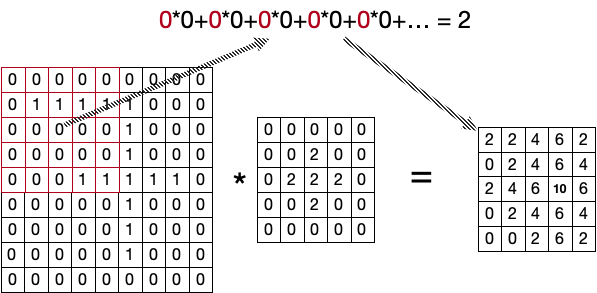- The central position of the 9x9 input is replaced by its convolution with the 5x5 mask
- The value is stored in the 5x5 output matrix (feature map).
- The procedure is repeated until the entire input matrix has been evaluated.
What are the hyperparameters involved in a convolution operation?
Parameters vs. hyperparameters
- What type of mask (kernel) will we use?
- What is the best dimension?
- How many filters will be employed?
- What is the value of the stride?
Number of Parameters
- Values in the masks that can be interpreted as weights: learned by the CNN during its training process.
Number of parameters to be learned: 2,515.
What is the role of the hyperparameter values in a CNN?
- Kernel size:
- Small kernels extract more local information (local features) with size reductions between layers smaller (deeper architectures)
- Larger kernels faster size reductions of feature maps and extract more global information
- Stride value: similar impact to kernel size
- Larger values: faster reductions of feature maps
- Smaller stride: more features being learned
Since smaller stride values and kernel sizes enable more features to be learned, why not always adopt them? This requires larger datasets.
Convolutions
In summary, we have to make decisions about the following items regarding a convolution layer:
- Type of padding
- Kernel size
- Stride value
- Number of filters
Pooling
- Decrease the resolution (downsampling) of the feature maps and
- Add invariance properties to the network.
- Feature maps size reduction leads to a decrease in the number of parameters to be learned by the network
- More efficient training
- Max-Pooling
- Average Pooling
- Global Pooling
Some illustrations to exemplify the functioning of the mentioned types of pooling.
- Max-Pooling (stride = 2)
Some illustrations to exemplify the functioning of the mentioned types of pooling.
- Average Pooling (stride = 2)
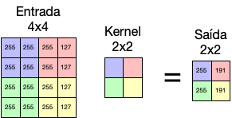
Pooling
- Global Pooling
- More radical in the context of downsampling
- Reduces the entire feature map to a single value
- In this case, we can use either max-pooling or average pooling
- Generally, max-pooling layers tend to provide better results
- more informative to use the highest value within a window than to “mask” them with their average value
Flattening
- Before sending our data to the fully connected layers, we need to “flatten” the tensor (data)
- Receive input with multiple dimensions (feature maps) and the output is a one-dimensional vector
Fully Connected + Dropout
- The final part consists of adopting fully connected layers
- Similar to an MLP Neural Network, with a softmax output at the end
- It is also common to adopt a regularization technique known as Dropout, which “removes” neurons randomly to speed up the training process and prevent overfitting
Keras Implementation
model = Sequential([
Input(shape=(28,28,1)),
Conv2D(filters=2,
kernel_size=(2,2),
strides=(1, 1),
padding="valid",
activation="relu"),
MaxPooling2D(pool_size=(2, 2),
strides=None,
padding="valid"),
Flatten(),
Dense(20, activation="relu"),
Dropout(rate=0.5),
Dense(10, activation="softmax")
])
- The
Conv2Drepresents a convolution layer - The
MaxPooling2Drepresents a pooling strategy - The
Flatten()is responsible for linearizing the output of the feature selection
Building an MNIST solution using Convolutions
Apply your knowledge you acquire to perform the classification in the Fashion MNIST classification problem.
- Things to try:
- Increase the number of Filters;
- Add Max Pooling layers;
- Increase the amount of convolutional layers
COVID-19 Dataset exercise
Apply your knowledge you acquire to change the classification solution you worked for the COVID-19 Chest CT dataset.
- Things to try:
- Increase the number of Filters;
- Add Max Pooling layers;
- Increase the amount of convolutional layers
Remember to not linearize the data, i.e., remove the line:
x_train = x_train.reshape(x_train.shape[0], IMAGE_SIZE * IMAGE_SIZE)
Autoencoders
Autoencoders
Some Definitions:
- Unsupervised learning algorithm that applies backpropagation, setting the target values to be equal to the inputs:
- Uses $y^{(i)} = x^{(i)}$
- Semi-supervised
- One (or more) hidden layers that describe a latent space encoding used to represent the input data.
- Two parts:
- Encoder function $h = f(x)$, and
- Decoder function that produces the reconstruction $r = g(h)$.
- Designed to be incapable of perfectly copying the data.
Question: Why is simply learning to set $g(f(x)) = x$ everywhere not particularly useful?
Autoencoders
Some Definitions:
- Special case of feedforward networks
- Trained with the same techniques, such as gradient descent with minibatch, backpropagation, etc.
- Restricted to only approximately copying, i.e., producing data that merely resembles the training data.
- Forced to prioritize only certain aspects of the input:
- Often learns useful properties of the data, e.g., relevant features.
- Traditionally used for dimensionality reduction or feature learning.
Autoencoders
Example:
Suppose the inputs $x$ are pixel intensity values of a 10×10 image (100 pixels) - $n = 100$, and there are $s_2 = 50$ hidden units in layer $L_2$.
From the definition of Autoencoders, we have $y \in \mathcal{R}^{100}$. Since there are only 50 hidden units, the network is forced to learn a "compressed" representation of the input.
Given only the activation vector of hidden units $a^{(2)} \in \mathcal{R}^{50}$, it must attempt to "reconstruct" the 100-pixel input $x$.
Autoencoders
Some Definitions:
- If there is any underlying structure in the data, such as some of the input attributes being correlated, then this algorithm will be able to discover some of these correlations.
- This simple form of autoencoder will likely learn a low-dimensional representation very similar to PCA
- Can be thought of as a data compression algorithm
- The compression and decompression functions are:
- Data-specific,
- Lossy, and
- Automatically learned from examples rather than designed by us.
Autoencoders
Some Definitions:
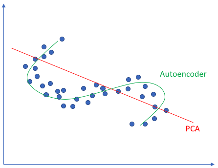
Autoencoders
Questions:
- Why don't Autoencoders represent optimal compression algorithms for general applications?
- Why do they need to be lossy?
- Would an autoencoder trained on face images do a good job compressing tree images?
Autoencoders
So, What Are They Good For?
- Data Compression?
- Almost impossible to outperform standard algorithms like JPEG, MP3, etc.;
- We can improve performance by restricting the type of data it uses;
- This reduces generalization capability.
- Generally impractical for real-world data compression/compaction problems:
- Can only be used on data similar to what it was trained on.
Autoencoders
So, What Are They Good For?
- Dimensionality Reduction:
- If the decoder is linear and the cost function is MSE, an Autoencoder learns to span the same subspace as PCA.
- Denoising:
- The data is partially corrupted by noise;
- The model is trained to predict the original, non-corrupted data as its output.
Autoencoders
Implementation
General Architecture:
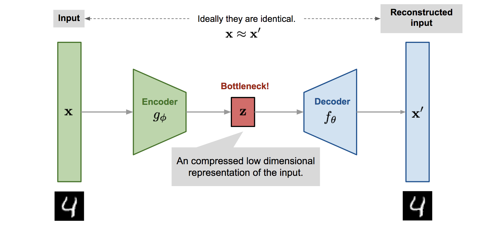Autoencoders
Implementation:
Dimensionality reduction for 3D data:
encoding_dim = 2
input_layer = keras.Input(shape=(3,))
encoded = layers.Dense(encoding_dim, activation="sigmoid")(input_layer)
decoded = layers.Dense(3, activation="sigmoid")(encoded)
autoencoder = keras.Model(input_layer, decoded)
autoencoder.compile(loss="mse", optimizer="SGD")
Autoencoders
Implementation
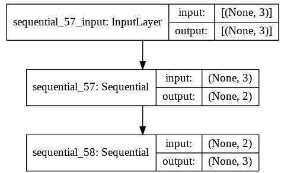
Autoencoders
Implementation
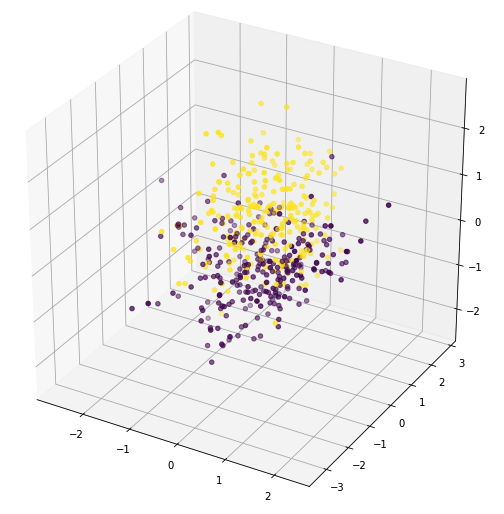 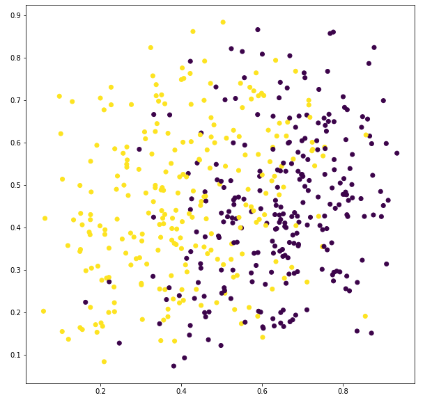Autoencoders
What Are They Not Good At?
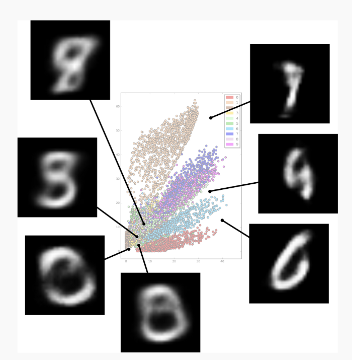Autoencoders
What Are They Not Good At?
- Some of the biggest challenges regarding the latent space are:
- Gaps in the latent space: we don’t know what data points might look like in those spaces.
- Separability in the latent space: there are also regions where the labels are intermixed/randomly scattered.
- Discrete latent space: we don’t have a trained statistical model for an arbitrary input.
Autoencoders
Limitations
- Unfortunately, autoencoders do not learn anything useful if the encoder and decoder have too much capacity.
- This also happens if the latent space has the same dimension as the input.
- Even a linear encoder and decoder can learn to copy the input to the output:
- Nothing useful is learned about the data distribution.
Regularized Autoencoders
Denoising Autoencoders
- The input is partially corrupted by adding noise or “masking” some values of the input vector stochastically;
- The model is trained to recover the original input (note: not the corrupted one);
where $\mathcal{M_D}$ defines the mapping of true data samples to noisy or corrupted ones.
Regularized Autoencoders
Denoising Autoencoders
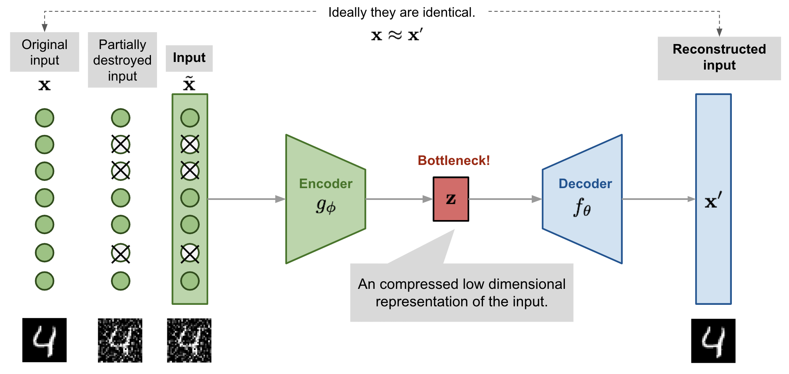
Source: Image by Lilian Weng
Regularized Autoencoders
Denoising Autoencoders
- Motivated by the fact that humans can easily recognize an object even with partially occluded vision;
- To “repair” the input, the DAE must discover the relationship between the input dimensions to infer the missing parts;
- In images, the model is likely to rely on evidence gathered from a combination of many input dimensions to recover the noise-free version:
- This creates a good foundation for learning a robust latent representation;
- In the original DAE paper, a fixed proportion of input dimensions is randomly selected, and their values are forced to 0 (similar to dropout?).
Regularized Autoencoders
Denoising Autoencoders - Implementation
Example for the MNIST dataset:
noise_factor = 0.5
x_train_noisy = x_train + noise_factor * np.random.normal(loc=0.0, scale=1.0, size=x_train.shape)
x_test_noisy = x_test + noise_factor * np.random.normal(loc=0.0, scale=1.0, size=x_test.shape)
Jupyter Notebook with the example implementation of Denoising Autoencoder for the MNIST.
Variational Autoencoders
Introduction
Recap: The problem with the standard autoencoder
- Besides some efficient applications like denoising autoencoders, they are quite limited.
- The latent space to which they convert their inputs, and where their encoding vectors reside, may not be continuous or allow for easy interpolation.
- For example, training an autoencoder on the MNIST dataset and visualizing the encodings in a 2D latent space reveals the formation of distinct clusters:
Variational Autoencoders
Recap: The problem with the standard autoencoder
- When building a generative model, we don’t want to replicate the input data:
- Randomly sample from the latent space, or
- Generate variations in an input image from a continuous latent space;
- If the space has discontinuities and you sample/generate a variation from there, the decoder will simply produce an unrealistic output;
- The decoder has no idea how to handle that region of the latent space;
- During training, it never saw encoded vectors coming from that region of the latent space;
Variational Autoencoders
Definitions
- Variational Autoencoders (VAEs) have a fundamentally unique property that separates them from common autoencoders:
- Their latent spaces are inherently continuous;
- The continuity of the latent space allows for easy random sampling and interpolation.
- Their encoder does not produce a coding vector of size $n$;
- Instead, it generates two vectors of size $n$:
- A vector of means, $\mu$, and
- Another vector of standard deviations, $\sigma$.
- The mean and the standard deviation of the $i$-th random variable, $X_i$, from which we sample to obtain the sampled encoding passed to the decoder;
Variational Autoencoders
Definitions
 Source: Variational Autoencoder architecture by Irhum Shafkat
Source: Variational Autoencoder architecture by Irhum Shafkat
Variational Autoencoders
Example
In a scenario where we have an input signal with 500 features and we intend to reduce this signal to just 30, we could build a VAE as follows:

Variational Autoencoders
Definitions
Variational Autoencoders
Definitions
- Stochastic generation of encoding vectors.
- For the same input, keeping the mean and standard deviation the same, the actual encoding will vary on each pass due to sampling.
- The mean vector controls where the encoding of an input should be centered;
- The standard deviation controls how much the encoding can vary from the mean (the area).

Variational Autoencoders
Definitions
- Not just a single point in the latent space refers to a sample of that class.
- All nearby points refer to the same within a $\sigma$ radius;
- The goal here is to create a more homogeneous latent space, eliminating discontinuity;
- The model is now exposed to a certain degree of local variation by varying the encoding of a sample;
- We want overlap between samples that are also not very similar;
- Interpolation between classes;
Variational Autoencoders
Definitions
- There are no limits to the values that the $\mu$ and $\sigma$ vectors can assume:
- The encoder can learn to generate very different $\mu$ values for different classes, clustering them and minimizing $\sigma$;
- It can reach a point that appears as a single point.
- Desirable: Encodings that are as close as possible while still distinct, allowing for smooth interpolation and the possibility of constructing new samples.
Variational Autoencoders
Definitions
What we want and what we can achieve:
Variational Autoencoders
Definitions - The KL Divergence
- Kullback-Leibler divergence
- Measures how much they diverge from each other;
- For VAEs, the cost by KL is equivalent to the sum of all KL divergences between the component $X_i\sim\mathcal{N}(\mu_i, \sigma_i^2)$ and the standard normal distribution.
- This measure is minimized when $\mu_i=0$ and $\sigma_i=0$;
- When the divergence is calculated between univariate distributions, it can be simplified to [1]: $$ \sum_{i=1}^n \sigma_i^2+\mu_i^2 - \log(\sigma_i^2)-1 $$
Variational Autoencoders
Definitions - The KL Divergence
- Forces the encoder to distribute all encodings uniformly around the center of the latent space;
- Using purely the result of the KL loss results in a latent space with densely placed encodings randomly, near the center of the latent space;
- The decoder finds it impossible to decode anything meaningful from this space;
Variational Autoencoders
Grouping the information…
- Use the KL divergence as a penalization mechanism;
- Optimize the composite loss (e.g., reconstruction, or cross-entropy) and the KL divergence;
- Generate a latent space that maintains the similarity of nearby encodings;
- Globally, it is densely packed near the origin of the latent space;
- Balance is achieved by the clustering nature of the reconstruction loss and the dense packing nature of the KL loss;